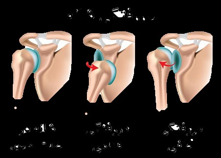

مفصل شانه متحرک ترین مفصل بدن است. این مفصل در جهات مختلف می چرخد و همین امر احتمال در رفتگی این مفصل را افزایش میدهد . مفصل شانه از در کنار هم قرار گرفتن دو استخوان تشکیل میشود. قسمت بالایی استخوان بازو که به سر استخوان بازو معروف است با قسمتی از استخوان کتف که آنرا حفره گلنوئید میگویند در کنار یکدیگر قرار میگیرند و مفصل شانه را بوجود می آورند. پایداری مفصل شانه معمولاً توسط بافتهایی که در اطراف مفصل وجود دارد تامین میشود. رباطها و عضلات اطراف مفصل شانه سر استخوان بازو را در سر جایش و در داخل حفره گلنوئید پایدار نگه میدارند. در حین در رفتگی مفصلی این یافتها پاره میشوند. در در رفتگی شانه سر استخوان بازو از این حفره خارج میشود.
